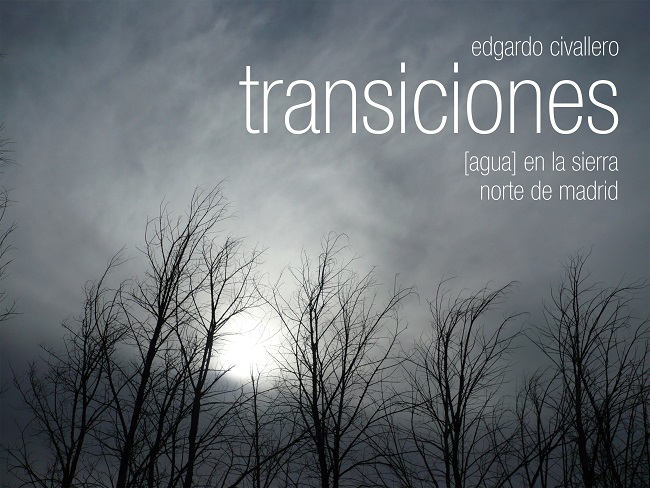
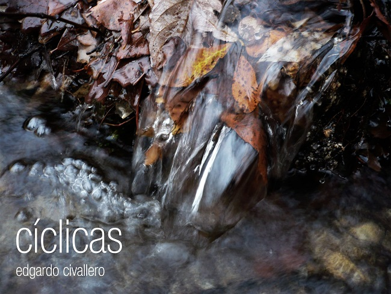

Photography books
Home > Publications > Photography books
The following works represent compilations of photographs united by a common theme. The emphasis is not on the quality of the images, but on the message to be conveyed or the story to be told, that is, on the thread that unites all the snapshots.
Please note that all content is protected by copyright and distributed under a Creative Commons license (refer to the copyright and disclaimer section for details).

Transiciones: [agua] en la sierra norte de Madrid ("Transitions: [water] in the northern sierra of Madrid", Madrid, 2015) presents a series of photographs taken over seven years on the southern slopes of the Sierra de Guadarrama (Spain), popularly known as the "northern sierra of Madrid". The images reflect the different states of the water and the transitions between them. Due to changes in the region's climate and, therefore, in its cycles, some of the realities and species shown in the photographs are not so common today, and will probably disappear in the years to come. Such changes are products of human activity, and are becoming irreversible.
[Download].
Señas particulares: la mirada en los detalles ("Particular signs: looking at the details", Madrid, 2016) includes a series of images in which the lens was set on small details: objects, corners and moments that could very well have escaped the gaze of an inattentive observer. The work rescues these elements because it is the small details that, added together, end up defining a landscape, a place, or an ecosystem. They are the ones that shape a profile, an identity, and diversity itself.
[Download].

Cíclicas: las huellas de las estaciones ("Cyclical: the footprints of the seasons", Madrid, 2016) comprises a collection of photographs taken on the southern slope of the Sierra de Guadarrama (Spain) over four years or, in other words, through fifteen seasons.
[Download].
Yanawan yuraqwan. Musical Andean instruments in black and white (Madrid, 2015) is a photographic album that presents, in a selection of 15 black and white images accompanied by brief reviews, some of the most interesting traditional Andean musical instruments: quenas, pusi p'ias, sikus, toyos, rondadores, ocarinas, charangos, pingullos, pinkillos, waka pinkillos, waylla qhepas and wank'aras.
[Download].